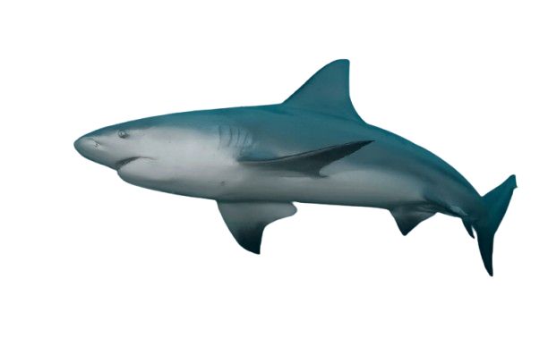

El tiburón sarda (Carcharhinus leucas), conocido también como tiburón lamia o tiburón del Zambeze, es una especie de pez cartilaginoso, el cual también es conocido en regiones angloparlantes como bull shark, por lo que al traducir esta denominación se le nombra de manera errónea como tiburón toro. Sin embargo, en realidad no tiene relación directa con la especie Carcharias tauro, que sería realmente el tiburón toro. El tiburón sarda pertenece al orden de los Carcharhiniformes, dominante entre la fauna de escualos.Es una especie que ha sido fuertemente explotada por la industria pesquera mundial, lo que ha afectado a su población global. Existen registros importantes de algunos accidentes fatales producto del ataque de este tiburón a las personas, por lo cual se considera peligroso para los humanos, de modo que es muy importante mantener las precauciones necesarias en los hábitats comunes de este animal.
En general, es un tiburón grande, donde las hembras llegan a tener mayores dimensiones que los machos. Así, las hembras, cuando alcanzan la madurez, miden entre 1,80 hasta y 2,5 metros de largo, mientras que los machos miden de 1,5 hasta un poco más de 2,2 m. En cuanto al peso, las primeras superan los 100 kg y los segundos alcanzan unos 95 kg en promedio. El mayor reporte sobre estas características de un tiburón sarda es de 4 metros y 316,5 kg. El color del cuerpo del tiburón sarda puede ser gris claro u oscuro y se aclara hasta el blanco en la región ventral. Cuando nace, es de una coloración parduzca y las puntas de las aletas es totalmente oscura, pero se va aclarando a medida que crece. La piel está cubierta de escamas placoideas (dentículos dérmicos), propias de los peces elasmobranquios, que dan al tacto una sensación áspera, pero que le otorgan protección y hacen mucho más eficiente el nado del animal.
La maduración en este tiburón ocurre en el caso de los machos cuando alcanzan los 157-226 cm y en las hembras los 180-230 cm. Cuando la hembra está dispuesta para la reproducción, modifica su forma de nadar y la posición tanto del hocico como de la cola, de modo que el macho pueda identificarla. Una vez que esto ocurre, se dará la copulación y en este momento el macho, de manera frecuente, muerde a la hembra, por lo que estas usualmente presentan cicatrices en las aletas pectorales y pélvicas.Es una especie vivípara, de modo que las crías se desarrollan en un saco vitelino. Generalmente, una camada es de 6 a 8 individuos, pero puede ser de menor número o alcanzar hasta los 13. El periodo de gestación dura entre 10 y 11 meses. Antes de que ocurra el nacimiento, la hembra se desplaza hasta estuarios o áreas de agua dulce donde nacerán las crías. Estas se mantendrán en estos espacios por cierto tiempo, alimentándose y siendo cuidadas por la madre. El crecimiento se da a un ritmo aproximado de 18 cm el primero año, 16 cm durante el segundo y luego unos 12 cm por año.
La dieta del Carcharhinus leucas se basa, principalmente, en peces y tiburones. También se pueden incluir tortugas, pájaros, delfines, crustáceos y mamíferos terrestres. Su táctica es cazar en aguas turbias para dificultar la visión de la presa y, posteriormente, golpearla y morderla al realizar el ataque.
El tiburón sarda es un depredador oportunista estrictamente carnívoro pero puede comer casi cualquier cosa que encuentra en su camino. Su menú de todos los días consta de peces, rayas, tortugas, moluscos, equinodermos, tiburones jóvenes (incluso de su propia especie), mamíferos y aves marinas. En estómagos de algunos ejemplares se han encontrado restos hasta de hipopótamos y seres humanos pero éstos no son parte habitual de la dieta. Sus peces predilectos son lisas, sábalos, jureles, caballas y pargos. Naturalmente, en terrenos de agua dulce su dieta se modifica y se alimenta de tortugas, camarones y otras especies propias del hábitat.
Caza solo en aguas turbias y compensa su restringido sentido de la vista con un agudo olfato. Si encuentran a un animal propicio para ser su comida, se dirige hacia él alcanzando velocidades de hasta 19 kilómetros por hora, lo golpea y después hunde los afilados dientes en la carne. El resto ya se sabe.
Este animal suele estar activo durante el día, penetrando las corrientes de agua dulce en las que suele movilizarse. En la noche, si lo decide, regresa al mar. Esta es la especie de tiburón que más tiempo logra estar en agua dulce por las adaptaciones arriba mencionadas, de modo que también acostumbra a pasar bastante tiempo en ríos caudalosos o lagos, a los que accede a través de estuarios. Este comportamiento hace que de manera frecuente esté cercano a zonas concurridas por personas, dando mayor probabilidad a que ocurran accidentes, puesto que, recordamos, el tiburón sarda es peligroso para el ser humano.
En algunas regiones se moviliza en verano hacia el norte, mientras que en invierno regresa más al sur en caso de tener preferencia por estas áreas. Por lo general, es un tiburón agresivo, como el resto de especies que forman al género Carcharhinus, y existen registros de sus ataques a personas.
El tiburón sarda es una especie con distribución mundial en aguas tropicales y templadas cálidas, con presencia estacional en zonas templadas frías. Por lo general, se ubica en profundidades menores a los 30 metros, pero puede llegar a los 150 m en aguas de la plataforma continental. Su área principal de ubicación son aguas neríticas y costeras. Este escualo con frecuencia se desplaza hasta estuarios y sigue hacia ríos arriba con mucha facilidad, algunos ejemplos de ríos donde ha sido identificado son: Amazonas, Gambia, Ganges, Mississippi, San Juan, Tigris, Zambezi y el lago de Nicaragua. Adicionalmente, y en contraste con su presencia en los hábitats antes mencionados, también puede tolerar aguas hipersalinas.
La característica del tiburón sarda más prominente es su posibilidad no solo de ingresar a cuerpos de agua dulce, sino de mantenerse ahí durante largos periodos de tiempo. Esto es posible gracias a la retención y regulación salina que logra hacer a través de glándulas especializadas, sus riñones e hígado.